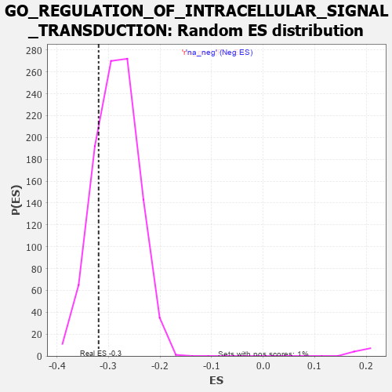

| | | Dataset | 7d |
| Phenotype | NoPhenotypeAvailable |
| Upregulated in class | na_neg |
| GeneSet | GO_REGULATION_OF_INTRACELLULAR_SIGNAL_TRANSDUCTION |
| Enrichment Score (ES) | -0.31931892 |
| Normalized Enrichment Score (NES) | -1.1200378 |
| Nominal p-value | 0.20525783 |
| FDR q-value | 0.7325172 |
| FWER p-Value | 1.0 |
Table: GSEA Results Summary
 Fig 1: Enrichment plot: GO_REGULATION_OF_INTRACELLULAR_SIGNAL_TRANSDUCTION
Fig 1: Enrichment plot: GO_REGULATION_OF_INTRACELLULAR_SIGNAL_TRANSDUCTION
Profile of the Running ES Score & Positions of GeneSet Members on the Rank Ordered List
| PROBE | GENE SYMBOL | GENE_TITLE | RANK IN GENE LIST | RANK METRIC SCORE | RUNNING ES | CORE ENRICHMENT | | 1 | TGFB3 | | | 49 | 2.654 | 0.0079 | No |
| 2 | RAC2 | | | 60 | 2.442 | 0.0197 | No |
| 3 | IRS1 | | | 98 | 1.659 | 0.0238 | No |
| 4 | AXIN1 | | | 166 | 1.159 | 0.0213 | No |
| 5 | WNT16 | | | 198 | 1.072 | 0.0230 | No |
| 6 | BCL3 | | | 202 | 1.047 | 0.0283 | No |
| 7 | RHOU | | | 210 | 1.031 | 0.0329 | No |
| 8 | RHOH | | | 228 | 0.987 | 0.0360 | No |
| 9 | HGF | | | 276 | 0.870 | 0.0345 | No |
| 10 | BOP1 | | | 330 | 0.768 | 0.0317 | No |
| 11 | DAPK2 | | | 343 | 0.754 | 0.0342 | No |
| 12 | GSK3A | | | 351 | 0.745 | 0.0373 | No |
| 13 | HUS1 | | | 362 | 0.735 | 0.0400 | No |
| 14 | BAX | | | 387 | 0.711 | 0.0407 | No |
| 15 | NBN | | | 405 | 0.696 | 0.0422 | No |
| 16 | OCRL | | | 408 | 0.691 | 0.0456 | No |
| 17 | RAD9A | | | 418 | 0.681 | 0.0481 | No |
| 18 | RRN3 | | | 438 | 0.667 | 0.0492 | No |
| 19 | WRN | | | 469 | 0.649 | 0.0488 | No |
| 20 | LRP1 | | | 470 | 0.648 | 0.0523 | No |
| 21 | RFC2 | | | 488 | 0.635 | 0.0535 | No |
| 22 | HTRA2 | | | 527 | 0.621 | 0.0519 | No |
| 23 | PKN1 | | | 535 | 0.619 | 0.0543 | No |
| 24 | DHX33 | | | 605 | 0.593 | 0.0484 | No |
| 25 | NOC2L | | | 647 | 0.578 | 0.0462 | No |
| 26 | RFC3 | | | 663 | 0.571 | 0.0473 | No |
| 27 | MRE11 | | | 693 | 0.560 | 0.0465 | No |
| 28 | ID1 | | | 719 | 0.555 | 0.0462 | No |
| 29 | BLM | | | 804 | 0.531 | 0.0380 | No |
| 30 | RFC4 | | | 815 | 0.528 | 0.0396 | No |
| 31 | RPA1 | | | 817 | 0.527 | 0.0423 | No |
| 32 | RPA2 | | | 851 | 0.519 | 0.0408 | No |
| 33 | IGBP1 | | | 869 | 0.514 | 0.0413 | No |
| 34 | RMI1 | | | 886 | 0.509 | 0.0419 | No |
| 35 | STOX1 | | | 905 | 0.506 | 0.0423 | No |
| 36 | WLS | | | 907 | 0.505 | 0.0449 | No |
| 37 | TTI1 | | | 919 | 0.503 | 0.0462 | No |
| 38 | PDCD4 | | | 941 | 0.497 | 0.0461 | No |
| 39 | DVL3 | | | 971 | 0.490 | 0.0449 | No |
| 40 | TAF3 | | | 988 | 0.486 | 0.0455 | No |
| 41 | MEN1 | | | 1003 | 0.483 | 0.0462 | No |
| 42 | TELO2 | | | 1006 | 0.482 | 0.0486 | No |
| 43 | AKT1 | | | 1040 | 0.476 | 0.0468 | No |
| 44 | TAF9 | | | 1046 | 0.475 | 0.0487 | No |
| 45 | FZD10 | | | 1065 | 0.470 | 0.0489 | No |
| 46 | CDK10 | | | 1092 | 0.465 | 0.0480 | No |
| 47 | RINT1 | | | 1110 | 0.462 | 0.0482 | No |
| 48 | SRC | | | 1128 | 0.459 | 0.0485 | No |
| 49 | NCK2 | | | 1131 | 0.458 | 0.0507 | No |
| 50 | GAB1 | | | 1158 | 0.453 | 0.0497 | No |
| 51 | RBBP7 | | | 1220 | 0.443 | 0.0441 | No |
| 52 | CHD3 | | | 1232 | 0.442 | 0.0450 | No |
| 53 | PARL | | | 1290 | 0.432 | 0.0399 | No |
| 54 | SSRP1 | | | 1323 | 0.424 | 0.0380 | No |
| 55 | UBR2 | | | 1334 | 0.423 | 0.0390 | No |
| 56 | KPTN | | | 1341 | 0.422 | 0.0404 | No |
| 57 | TAF2 | | | 1375 | 0.415 | 0.0383 | No |
| 58 | P2RY1 | | | 1416 | 0.407 | 0.0353 | No |
| 59 | PTBP1 | | | 1441 | 0.402 | 0.0343 | No |
| 60 | OTUD3 | | | 1450 | 0.400 | 0.0354 | No |
| 61 | TIMP2 | | | 1478 | 0.394 | 0.0340 | No |
| 62 | TAF15 | | | 1481 | 0.393 | 0.0359 | No |
| 63 | TAF6 | | | 1512 | 0.389 | 0.0340 | No |
| 64 | SOS1 | | | 1547 | 0.384 | 0.0316 | No |
| 65 | ERP29 | | | 1589 | 0.376 | 0.0283 | No |
| 66 | NPRL3 | | | 1592 | 0.375 | 0.0300 | No |
| 67 | HYOU1 | | | 1692 | 0.358 | 0.0190 | No |
| 68 | TPX2 | | | 1708 | 0.355 | 0.0189 | No |
| 69 | JPH1 | | | 1741 | 0.347 | 0.0166 | No |
| 70 | FNIP1 | | | 1798 | 0.338 | 0.0111 | No |
| 71 | RAD17 | | | 1804 | 0.336 | 0.0122 | No |
| 72 | ABR | | | 1812 | 0.335 | 0.0131 | No |
| 73 | RPF2 | | | 1814 | 0.335 | 0.0148 | No |
| 74 | GATA4 | | | 1837 | 0.330 | 0.0137 | No |
| 75 | CHD4 | | | 1845 | 0.329 | 0.0145 | No |
| 76 | TRIM5 | | | 1852 | 0.327 | 0.0155 | No |
| 77 | NFAT5 | | | 1856 | 0.326 | 0.0169 | No |
| 78 | SMAD4 | | | 1860 | 0.326 | 0.0182 | No |
| 79 | NUP62 | | | 1871 | 0.324 | 0.0187 | No |
| 80 | PAK3 | | | 1889 | 0.322 | 0.0182 | No |
| 81 | CUL3 | | | 1893 | 0.321 | 0.0195 | No |
| 82 | TAF4 | | | 1899 | 0.321 | 0.0206 | No |
| 83 | HACD3 | | | 1932 | 0.315 | 0.0181 | No |
| 84 | ROR1 | | | 1993 | 0.306 | 0.0119 | No |
| 85 | EXO1 | | | 2002 | 0.304 | 0.0125 | No |
| 86 | RAF1 | | | 2011 | 0.303 | 0.0130 | No |
| 87 | BRPF1 | | | 2085 | 0.293 | 0.0050 | No |
| 88 | TAF7 | | | 2092 | 0.292 | 0.0058 | No |
| 89 | BMP7 | | | 2107 | 0.290 | 0.0056 | No |
| 90 | GMIP | | | 2108 | 0.290 | 0.0071 | No |
| 91 | NPRL2 | | | 2184 | 0.278 | -0.0012 | No |
| 92 | SYK | | | 2186 | 0.278 | 0.0001 | No |
| 93 | MEIS3 | | | 2188 | 0.278 | 0.0015 | No |
| 94 | C1QBP | | | 2189 | 0.278 | 0.0030 | No |
| 95 | ATAD5 | | | 2197 | 0.277 | 0.0036 | No |
| 96 | TRAP1 | | | 2219 | 0.274 | 0.0023 | No |
| 97 | CDK2 | | | 2226 | 0.272 | 0.0030 | No |
| 98 | WTIP | | | 2228 | 0.272 | 0.0043 | No |
| 99 | SHC2 | | | 2263 | 0.266 | 0.0013 | No |
| 100 | AIP | | | 2281 | 0.263 | 0.0005 | No |
| 101 | SEC13 | | | 2330 | 0.256 | -0.0044 | No |
| 102 | TOP3A | | | 2331 | 0.256 | -0.0031 | No |
| 103 | MIF | | | 2357 | 0.252 | -0.0050 | No |
| 104 | HIPK2 | | | 2389 | 0.247 | -0.0077 | No |
| 105 | MET | | | 2430 | 0.240 | -0.0117 | No |
| 106 | KAT6A | | | 2444 | 0.237 | -0.0121 | No |
| 107 | KDM1A | | | 2447 | 0.237 | -0.0111 | No |
| 108 | MBD3 | | | 2524 | 0.223 | -0.0199 | No |
| 109 | RAD1 | | | 2528 | 0.223 | -0.0191 | No |
| 110 | EMC10 | | | 2607 | 0.211 | -0.0282 | No |
| 111 | VAV3 | | | 2614 | 0.210 | -0.0278 | No |
| 112 | PUM2 | | | 2627 | 0.209 | -0.0283 | No |
| 113 | KAT5 | | | 2644 | 0.206 | -0.0292 | No |
| 114 | NOP2 | | | 2648 | 0.206 | -0.0285 | No |
| 115 | WDR83 | | | 2669 | 0.203 | -0.0301 | No |
| 116 | SASH1 | | | 2682 | 0.201 | -0.0305 | No |
| 117 | TAF12 | | | 2686 | 0.201 | -0.0299 | No |
| 118 | PHB2 | | | 2712 | 0.197 | -0.0321 | No |
| 119 | DDX1 | | | 2718 | 0.196 | -0.0317 | No |
| 120 | SLIT2 | | | 2724 | 0.195 | -0.0313 | No |
| 121 | RORA | | | 2730 | 0.193 | -0.0309 | No |
| 122 | ATR | | | 2800 | 0.183 | -0.0390 | No |
| 123 | BECN1 | | | 2828 | 0.179 | -0.0415 | No |
| 124 | MTM1 | | | 2893 | 0.168 | -0.0490 | No |
| 125 | FGFR2 | | | 2895 | 0.167 | -0.0483 | No |
| 126 | FRMD1 | | | 2962 | 0.156 | -0.0561 | No |
| 127 | BRD7 | | | 3018 | 0.147 | -0.0625 | No |
| 128 | ULK4 | | | 3022 | 0.146 | -0.0621 | No |
| 129 | MARK3 | | | 3031 | 0.145 | -0.0624 | No |
| 130 | PIAS4 | | | 3034 | 0.145 | -0.0619 | No |
| 131 | UFL1 | | | 3041 | 0.144 | -0.0619 | No |
| 132 | HDAC1 | | | 3086 | 0.138 | -0.0669 | No |
| 133 | CHP1 | | | 3089 | 0.138 | -0.0664 | No |
| 134 | TMED4 | | | 3106 | 0.136 | -0.0678 | No |
| 135 | GPX1 | | | 3109 | 0.135 | -0.0673 | No |
| 136 | TAF11 | | | 3147 | 0.130 | -0.0715 | No |
| 137 | SFRP5 | | | 3154 | 0.129 | -0.0716 | No |
| 138 | ERN2 | | | 3160 | 0.129 | -0.0715 | No |
| 139 | GCNT2 | | | 3162 | 0.128 | -0.0710 | No |
| 140 | TRIO | | | 3192 | 0.123 | -0.0741 | No |
| 141 | TFG | | | 3243 | 0.114 | -0.0801 | No |
| 142 | TAF13 | | | 3325 | 0.100 | -0.0901 | No |
| 143 | TAB1 | | | 3351 | 0.097 | -0.0929 | No |
| 144 | DDX3X | | | 3388 | 0.091 | -0.0971 | No |
| 145 | RFC5 | | | 3389 | 0.091 | -0.0966 | No |
| 146 | HGS | | | 3476 | 0.080 | -0.1075 | No |
| 147 | CDK5 | | | 3480 | 0.080 | -0.1075 | No |
| 148 | TBP | | | 3493 | 0.078 | -0.1086 | No |
| 149 | HDAC3 | | | 3528 | 0.072 | -0.1127 | No |
| 150 | PIN1 | | | 3543 | 0.069 | -0.1142 | No |
| 151 | GPR18 | | | 3578 | 0.063 | -0.1183 | No |
| 152 | CHERP | | | 3587 | 0.062 | -0.1190 | No |
| 153 | MAPK3 | | | 3589 | 0.062 | -0.1188 | No |
| 154 | STK25 | | | 3602 | 0.059 | -0.1200 | No |
| 155 | CBL | | | 3621 | 0.056 | -0.1221 | No |
| 156 | FIS1 | | | 3654 | 0.051 | -0.1260 | No |
| 157 | WDR59 | | | 3692 | 0.045 | -0.1306 | No |
| 158 | NF1 | | | 3713 | 0.040 | -0.1330 | No |
| 159 | DAXX | | | 3722 | 0.038 | -0.1339 | No |
| 160 | DGKQ | | | 3856 | 0.020 | -0.1512 | No |
| 161 | PPM1A | | | 3953 | 0.002 | -0.1638 | No |
| 162 | NCOR1 | | | 3961 | 0.000 | -0.1648 | No |
| 163 | SOS2 | | | 3963 | 0.000 | -0.1649 | No |
| 164 | IGF1R | | | 3970 | -0.002 | -0.1657 | No |
| 165 | SCAI | | | 3983 | -0.005 | -0.1672 | No |
| 166 | PARP1 | | | 4014 | -0.010 | -0.1711 | No |
| 167 | SFRP2 | | | 4065 | -0.018 | -0.1776 | No |
| 168 | CSF1 | | | 4074 | -0.019 | -0.1785 | No |
| 169 | PDE8A | | | 4097 | -0.023 | -0.1813 | No |
| 170 | TRAF1 | | | 4104 | -0.024 | -0.1819 | No |
| 171 | MTOR | | | 4114 | -0.025 | -0.1830 | No |
| 172 | ABL1 | | | 4125 | -0.027 | -0.1841 | No |
| 173 | PLCE1 | | | 4127 | -0.028 | -0.1841 | No |
| 174 | CRK | | | 4139 | -0.031 | -0.1854 | No |
| 175 | CDK12 | | | 4148 | -0.033 | -0.1863 | No |
| 176 | GPAT3 | | | 4170 | -0.037 | -0.1888 | No |
| 177 | PDX1 | | | 4179 | -0.038 | -0.1897 | No |
| 178 | RRAGD | | | 4183 | -0.039 | -0.1899 | No |
| 179 | SESN1 | | | 4192 | -0.041 | -0.1907 | No |
| 180 | GBF1 | | | 4215 | -0.044 | -0.1933 | No |
| 181 | FHL2 | | | 4222 | -0.046 | -0.1939 | No |
| 182 | RRAGA | | | 4223 | -0.046 | -0.1936 | No |
| 183 | RPTOR | | | 4252 | -0.050 | -0.1970 | No |
| 184 | RRS1 | | | 4256 | -0.051 | -0.1972 | No |
| 185 | WNT11 | | | 4282 | -0.056 | -0.2001 | No |
| 186 | RGS3 | | | 4293 | -0.059 | -0.2011 | No |
| 187 | BAG4 | | | 4314 | -0.061 | -0.2034 | No |
| 188 | OPA1 | | | 4330 | -0.065 | -0.2050 | No |
| 189 | ADRB2 | | | 4352 | -0.068 | -0.2074 | No |
| 190 | PRR5L | | | 4418 | -0.080 | -0.2155 | No |
| 191 | MYDGF | | | 4429 | -0.081 | -0.2164 | No |
| 192 | SYVN1 | | | 4454 | -0.085 | -0.2191 | No |
| 193 | ERCC6 | | | 4464 | -0.087 | -0.2198 | No |
| 194 | LRRK2 | | | 4467 | -0.087 | -0.2196 | No |
| 195 | EPS8 | | | 4474 | -0.088 | -0.2199 | No |
| 196 | JPH3 | | | 4481 | -0.091 | -0.2202 | No |
| 197 | HIP1 | | | 4485 | -0.092 | -0.2201 | No |
| 198 | ILK | | | 4510 | -0.096 | -0.2227 | No |
| 199 | NPTN | | | 4519 | -0.098 | -0.2232 | No |
| 200 | NTRK2 | | | 4543 | -0.104 | -0.2257 | No |
| 201 | GATA3 | | | 4614 | -0.120 | -0.2342 | No |
| 202 | DLG5 | | | 4619 | -0.121 | -0.2341 | No |
| 203 | TAF10 | | | 4652 | -0.128 | -0.2376 | No |
| 204 | FGFR3 | | | 4656 | -0.129 | -0.2373 | No |
| 205 | ITPR1 | | | 4661 | -0.130 | -0.2371 | No |
| 206 | TTC5 | | | 4665 | -0.131 | -0.2368 | No |
| 207 | ARF6 | | | 4704 | -0.140 | -0.2411 | No |
| 208 | RAP1B | | | 4706 | -0.140 | -0.2404 | No |
| 209 | FBLN1 | | | 4748 | -0.149 | -0.2450 | No |
| 210 | RTN4 | | | 4783 | -0.154 | -0.2486 | No |
| 211 | MYO5A | | | 4787 | -0.155 | -0.2482 | No |
| 212 | PIM2 | | | 4789 | -0.155 | -0.2475 | No |
| 213 | ITFG2 | | | 4796 | -0.156 | -0.2474 | No |
| 214 | TNIK | | | 4804 | -0.158 | -0.2475 | No |
| 215 | P2RX4 | | | 4813 | -0.161 | -0.2477 | No |
| 216 | FBXW7 | | | 4816 | -0.161 | -0.2471 | No |
| 217 | TAOK3 | | | 4823 | -0.162 | -0.2470 | No |
| 218 | EIF3A | | | 4842 | -0.167 | -0.2485 | No |
| 219 | DLG1 | | | 4860 | -0.169 | -0.2498 | No |
| 220 | CLU | | | 4889 | -0.174 | -0.2525 | No |
| 221 | CASP1 | | | 4932 | -0.185 | -0.2570 | No |
| 222 | TBCK | | | 4937 | -0.186 | -0.2565 | No |
| 223 | FZD4 | | | 4940 | -0.186 | -0.2558 | No |
| 224 | EP300 | | | 4941 | -0.186 | -0.2548 | No |
| 225 | ARAP1 | | | 4963 | -0.191 | -0.2565 | No |
| 226 | KLF4 | | | 5005 | -0.198 | -0.2608 | No |
| 227 | TAF5 | | | 5031 | -0.204 | -0.2630 | No |
| 228 | PDPK1 | | | 5043 | -0.207 | -0.2633 | No |
| 229 | NEK8 | | | 5071 | -0.217 | -0.2657 | No |
| 230 | DRD2 | | | 5088 | -0.221 | -0.2666 | No |
| 231 | ITSN1 | | | 5094 | -0.222 | -0.2661 | No |
| 232 | MMP9 | | | 5108 | -0.227 | -0.2666 | No |
| 233 | FLCN | | | 5140 | -0.235 | -0.2694 | No |
| 234 | TBX1 | | | 5166 | -0.241 | -0.2713 | No |
| 235 | NEK10 | | | 5180 | -0.244 | -0.2717 | No |
| 236 | ASH1L | | | 5203 | -0.248 | -0.2733 | No |
| 237 | ATM | | | 5210 | -0.249 | -0.2727 | No |
| 238 | GPR4 | | | 5219 | -0.250 | -0.2724 | No |
| 239 | DDX21 | | | 5231 | -0.252 | -0.2725 | No |
| 240 | MGRN1 | | | 5250 | -0.257 | -0.2735 | No |
| 241 | PTEN | | | 5262 | -0.261 | -0.2735 | No |
| 242 | CDK1 | | | 5264 | -0.262 | -0.2722 | No |
| 243 | EPHA4 | | | 5273 | -0.265 | -0.2719 | No |
| 244 | MAGI2 | | | 5295 | -0.269 | -0.2732 | No |
| 245 | STK19 | | | 5297 | -0.270 | -0.2718 | No |
| 246 | RAD50 | | | 5314 | -0.276 | -0.2724 | No |
| 247 | NPY2R | | | 5331 | -0.281 | -0.2730 | No |
| 248 | LMO3 | | | 5342 | -0.283 | -0.2728 | No |
| 249 | FZD5 | | | 5386 | -0.292 | -0.2769 | No |
| 250 | PPM1B | | | 5422 | -0.300 | -0.2799 | No |
| 251 | EFHB | | | 5447 | -0.306 | -0.2814 | No |
| 252 | ACTN3 | | | 5486 | -0.315 | -0.2846 | No |
| 253 | FGFR1 | | | 5543 | -0.332 | -0.2902 | No |
| 254 | WDR24 | | | 5568 | -0.338 | -0.2915 | No |
| 255 | SPHK1 | | | 5576 | -0.339 | -0.2906 | No |
| 256 | SMYD2 | | | 5598 | -0.344 | -0.2915 | No |
| 257 | ROR2 | | | 5626 | -0.353 | -0.2932 | No |
| 258 | CASP8 | | | 5678 | -0.369 | -0.2979 | No |
| 259 | MADD | | | 5686 | -0.371 | -0.2968 | No |
| 260 | DGKI | | | 5725 | -0.384 | -0.2997 | No |
| 261 | CALCR | | | 5730 | -0.386 | -0.2981 | No |
| 262 | TPTE2 | | | 5736 | -0.388 | -0.2967 | No |
| 263 | TLR2 | | | 5761 | -0.395 | -0.2977 | No |
| 264 | ADA | | | 5798 | -0.405 | -0.3003 | No |
| 265 | TKFC | | | 5854 | -0.419 | -0.3052 | No |
| 266 | SZT2 | | | 5882 | -0.429 | -0.3064 | No |
| 267 | STK11 | | | 5922 | -0.443 | -0.3092 | No |
| 268 | VAPA | | | 5939 | -0.449 | -0.3089 | No |
| 269 | SGSM3 | | | 5957 | -0.457 | -0.3086 | No |
| 270 | XBP1 | | | 6011 | -0.475 | -0.3130 | No |
| 271 | JMY | | | 6023 | -0.479 | -0.3119 | No |
| 272 | RAC1 | | | 6036 | -0.484 | -0.3108 | No |
| 273 | FZD8 | | | 6051 | -0.490 | -0.3100 | No |
| 274 | CALR | | | 6077 | -0.499 | -0.3106 | No |
| 275 | DBNL | | | 6084 | -0.501 | -0.3087 | No |
| 276 | UBB | | | 6090 | -0.503 | -0.3067 | No |
| 277 | ROCK1 | | | 6152 | -0.520 | -0.3119 | No |
| 278 | INSR | | | 6204 | -0.538 | -0.3156 | No |
| 279 | RGN | | | 6233 | -0.547 | -0.3164 | Yes |
| 280 | CDC42 | | | 6236 | -0.548 | -0.3137 | Yes |
| 281 | VDAC2 | | | 6242 | -0.553 | -0.3113 | Yes |
| 282 | STK39 | | | 6274 | -0.563 | -0.3124 | Yes |
| 283 | FLOT1 | | | 6276 | -0.564 | -0.3095 | Yes |
| 284 | TRAF7 | | | 6290 | -0.571 | -0.3081 | Yes |
| 285 | BIRC3 | | | 6366 | -0.603 | -0.3147 | Yes |
| 286 | CDON | | | 6378 | -0.607 | -0.3129 | Yes |
| 287 | UBE2N | | | 6407 | -0.621 | -0.3132 | Yes |
| 288 | CSK | | | 6428 | -0.630 | -0.3124 | Yes |
| 289 | MALT1 | | | 6432 | -0.634 | -0.3094 | Yes |
| 290 | SOX2 | | | 6477 | -0.652 | -0.3116 | Yes |
| 291 | WDR54 | | | 6491 | -0.658 | -0.3098 | Yes |
| 292 | TRPV4 | | | 6515 | -0.668 | -0.3092 | Yes |
| 293 | DYRK2 | | | 6533 | -0.677 | -0.3078 | Yes |
| 294 | KANK1 | | | 6536 | -0.678 | -0.3044 | Yes |
| 295 | P2RX5 | | | 6576 | -0.699 | -0.3057 | Yes |
| 296 | ROBO1 | | | 6577 | -0.699 | -0.3020 | Yes |
| 297 | RNF41 | | | 6588 | -0.703 | -0.2995 | Yes |
| 298 | RABL3 | | | 6627 | -0.727 | -0.3006 | Yes |
| 299 | RFFL | | | 6674 | -0.749 | -0.3025 | Yes |
| 300 | PAK1 | | | 6691 | -0.757 | -0.3006 | Yes |
| 301 | EGFR | | | 6708 | -0.765 | -0.2985 | Yes |
| 302 | GSK3B | | | 6719 | -0.768 | -0.2957 | Yes |
| 303 | NET1 | | | 6803 | -0.816 | -0.3022 | Yes |
| 304 | ADAM9 | | | 6808 | -0.819 | -0.2983 | Yes |
| 305 | PAQR3 | | | 6812 | -0.819 | -0.2943 | Yes |
| 306 | CSPG4 | | | 6918 | -0.878 | -0.3033 | Yes |
| 307 | FBXL2 | | | 6956 | -0.911 | -0.3033 | Yes |
| 308 | DNM1L | | | 6963 | -0.913 | -0.2991 | Yes |
| 309 | PDE2A | | | 6985 | -0.927 | -0.2969 | Yes |
| 310 | RNF34 | | | 7040 | -0.963 | -0.2988 | Yes |
| 311 | RYK | | | 7102 | -1.000 | -0.3014 | Yes |
| 312 | RBBP4 | | | 7123 | -1.010 | -0.2986 | Yes |
| 313 | DDX5 | | | 7152 | -1.037 | -0.2966 | Yes |
| 314 | UFD1 | | | 7157 | -1.040 | -0.2916 | Yes |
| 315 | AR | | | 7169 | -1.046 | -0.2874 | Yes |
| 316 | PTPRJ | | | 7180 | -1.054 | -0.2830 | Yes |
| 317 | MFN2 | | | 7208 | -1.081 | -0.2807 | Yes |
| 318 | ABCA1 | | | 7243 | -1.113 | -0.2792 | Yes |
| 319 | CIB1 | | | 7280 | -1.152 | -0.2777 | Yes |
| 320 | CYLD | | | 7333 | -1.206 | -0.2780 | Yes |
| 321 | NGEF | | | 7335 | -1.209 | -0.2716 | Yes |
| 322 | GPD1L | | | 7343 | -1.215 | -0.2660 | Yes |
| 323 | ARAP2 | | | 7397 | -1.261 | -0.2661 | Yes |
| 324 | GRM1 | | | 7404 | -1.272 | -0.2600 | Yes |
| 325 | LRRD1 | | | 7406 | -1.273 | -0.2533 | Yes |
| 326 | UBC | | | 7410 | -1.274 | -0.2468 | Yes |
| 327 | CD22 | | | 7534 | -1.449 | -0.2551 | Yes |
| 328 | SHOC2 | | | 7546 | -1.463 | -0.2487 | Yes |
| 329 | GRIK2 | | | 7552 | -1.471 | -0.2414 | Yes |
| 330 | CALM1 | | | 7567 | -1.499 | -0.2352 | Yes |
| 331 | LITAF | | | 7572 | -1.511 | -0.2275 | Yes |
| 332 | TRAF4 | | | 7573 | -1.514 | -0.2194 | Yes |
| 333 | NLRC3 | | | 7574 | -1.515 | -0.2112 | Yes |
| 334 | GRM2 | | | 7596 | -1.547 | -0.2056 | Yes |
| 335 | PDCD6 | | | 7630 | -1.615 | -0.2012 | Yes |
| 336 | TAF1 | | | 7643 | -1.633 | -0.1940 | Yes |
| 337 | BOK | | | 7715 | -1.817 | -0.1935 | Yes |
| 338 | RNF31 | | | 7744 | -1.895 | -0.1870 | Yes |
| 339 | P2RY8 | | | 7750 | -1.912 | -0.1773 | Yes |
| 340 | PDE4D | | | 7764 | -1.944 | -0.1685 | Yes |
| 341 | TRAF6 | | | 7818 | -2.157 | -0.1638 | Yes |
| 342 | PKD2 | | | 7822 | -2.167 | -0.1525 | Yes |
| 343 | GRM4 | | | 7847 | -2.393 | -0.1428 | Yes |
| 344 | TRAF2 | | | 7861 | -2.481 | -0.1311 | Yes |
| 345 | CALM3 | | | 7869 | -2.525 | -0.1184 | Yes |
| 346 | FYN | | | 7881 | -2.622 | -0.1057 | Yes |
| 347 | TRAF3 | | | 7886 | -2.695 | -0.0917 | Yes |
| 348 | CAV3 | | | 7896 | -2.739 | -0.0781 | Yes |
| 349 | MIB2 | | | 7902 | -2.813 | -0.0636 | Yes |
| 350 | PLCB1 | | | 7904 | -2.841 | -0.0484 | Yes |
| 351 | ARRB1 | | | 7935 | -3.377 | -0.0341 | Yes |
| 352 | TRAF5 | | | 7938 | -3.448 | -0.0157 | Yes |
| 353 | XIAP | | | 7947 | -3.696 | 0.0031 | Yes |
Table: GSEA details [plain text format]

Fig 2: GO_REGULATION_OF_INTRACELLULAR_SIGNAL_TRANSDUCTION: Random ES distribution
Gene set null distribution of ES for GO_REGULATION_OF_INTRACELLULAR_SIGNAL_TRANSDUCTION